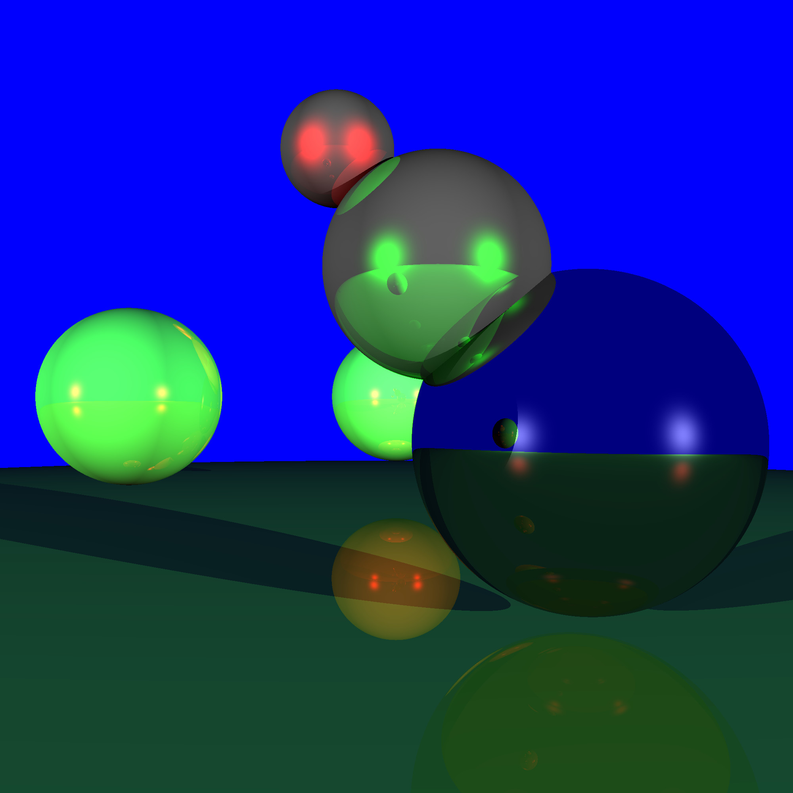

A multi-threaded recursive ray tracer developed for a Computer Graphics course. Supports super-sampling for anti-aliasing and recursive reflections for realistic scene rendering.

This ray tracer takes basic .scn files as input and outputs .ppm images. All ray-sphere intersections are performed in object-space, allowing non-uniform transformations like the ground "plane" shown below.

Future work includes fixing refraction calculations, adding more object types, texture support, and full support for various input and output file types.